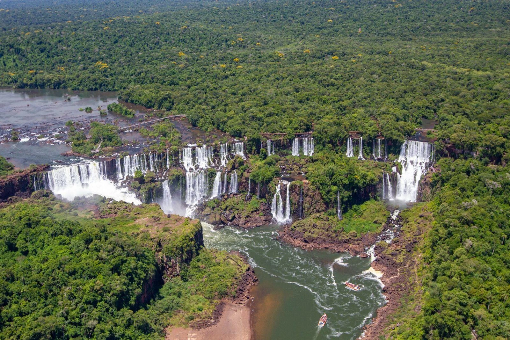
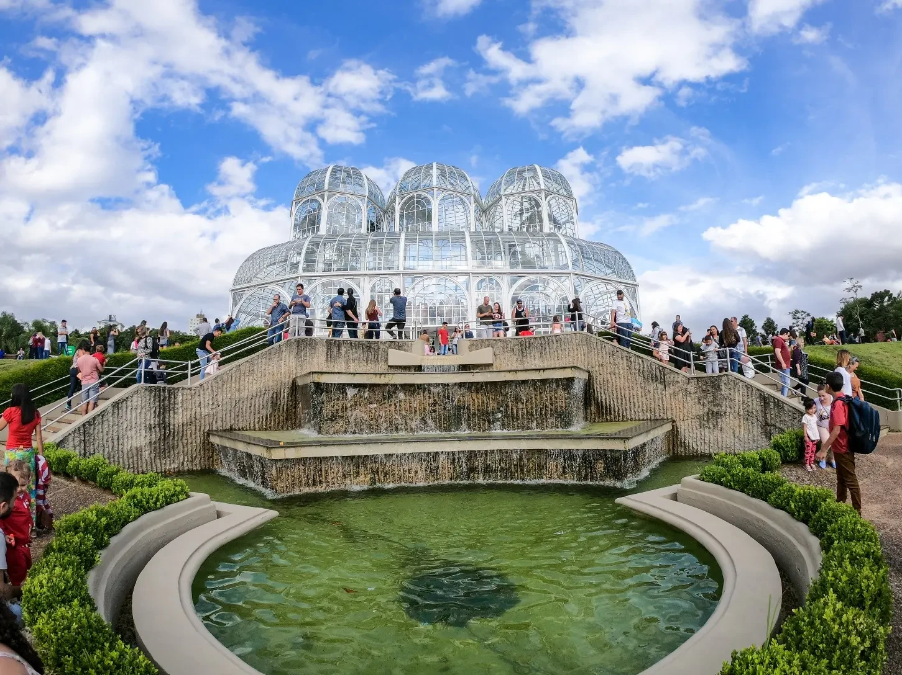
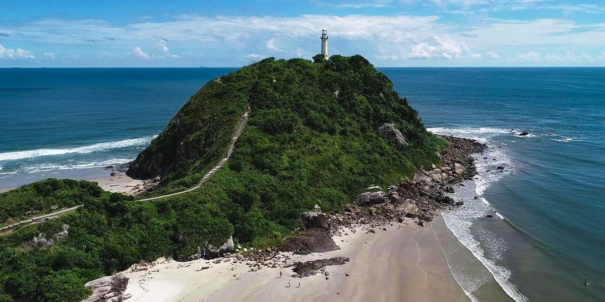
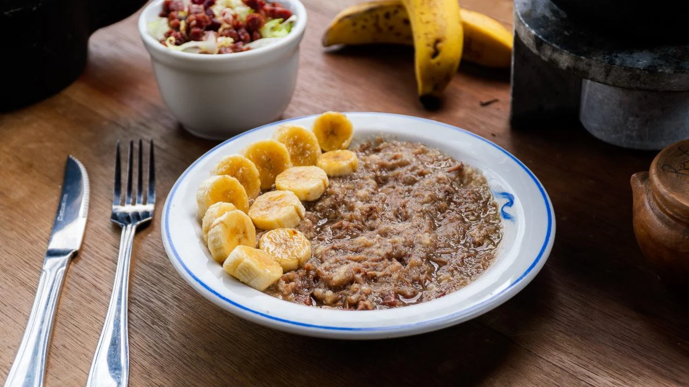
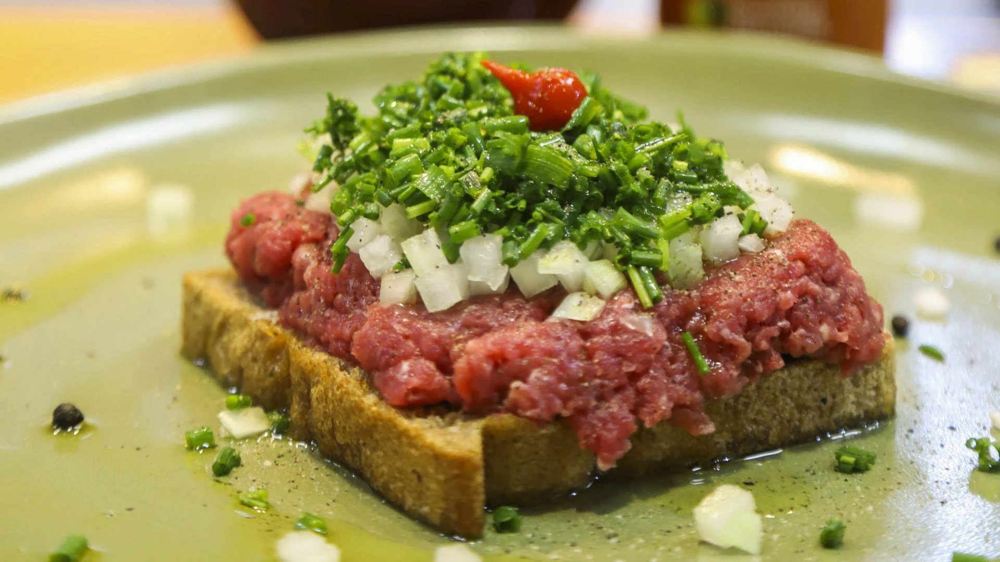
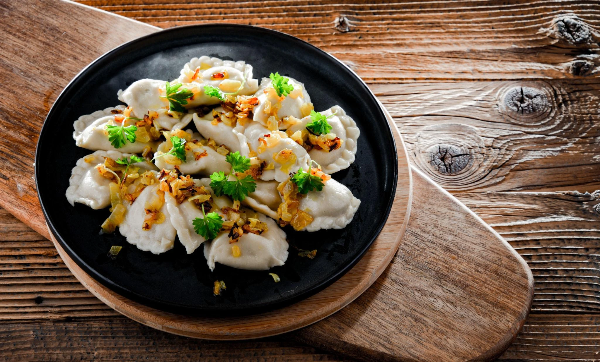

Capital
Curitiba
Conheça destinos, culturas, sabores e paisagens de todas as regiões
brasileiras.
Destinos, culturas e paisagens
incríveis te esperam.
O Paraná é um estado localizado na Região Sul do Brasil, conhecido por sua diversidade cultural, belezas naturais e forte desenvolvimento econômico. O estado reúne paisagens que vão desde áreas de Mata Atlântica e parques naturais até modernas cidades urbanizadas. Sua cultura foi influenciada por diversos povos, especialmente italianos, alemães, poloneses, ucranianos e japoneses.

Curitiba
Aproximadamente 199.315 km²
Cerca de 11,8 milhões de habitantes
Sul

Localizadas na fronteira entre Brasil e Argentina, as cataratas formam um dos maiores conjuntos de quedas d'água do mundo. O local impressiona pela grandiosidade da paisagem e pela rica biodiversidade preservada.

Cartão-postal da capital paranaense, destaca-se por sua estufa de vidro inspirada na arquitetura europeia. Seus jardins bem cuidados atraem visitantes durante todo o ano.

Localizada no litoral paranaense, é famosa por suas praias preservadas, trilhas ecológicas e atmosfera tranquila. O acesso controlado ajuda a conservar suas belezas naturais.

Prato tradicional preparado com carne bovina cozida lentamente em panela de barro vedada. É muito consumido no litoral do estado, especialmente em Morretes.

Especialidade curitibana feita com carne bovina crua temperada servida sobre fatias de broa. Apesar do nome curioso, não possui relação com carne de onça.

Receita trazida pelos imigrantes poloneses, consiste em pequenos pastéis cozidos recheados com batata, queijo ou carne. Tornou-se bastante popular no estado.
O Paraná possui clima subtropical. Os verões costumam ser quentes, enquanto os invernos apresentam temperaturas mais baixas, especialmente nas regiões mais elevadas.
O Paraná possui clima subtropical. Os verões costumam ser quentes, enquanto os invernos apresentam temperaturas mais baixas, especialmente nas regiões mais elevadas.
A região Oeste é ideal para conhecer as Cataratas do Iguaçu, enquanto a capital Curitiba oferece atrações urbanas e culturais. Já o litoral é excelente para quem busca praias e contato com a natureza.
A região Oeste é ideal para conhecer as Cataratas do Iguaçu, enquanto a capital Curitiba oferece atrações urbanas e culturais. Já o litoral é excelente para quem busca praias e contato com a natureza.
A culinária paranaense mistura tradições indígenas, tropeiras e influências de imigrantes europeus, resultando em pratos únicos e muito variados.
A culinária paranaense mistura tradições indígenas, tropeiras e influências de imigrantes europeus, resultando em pratos únicos e muito variados.